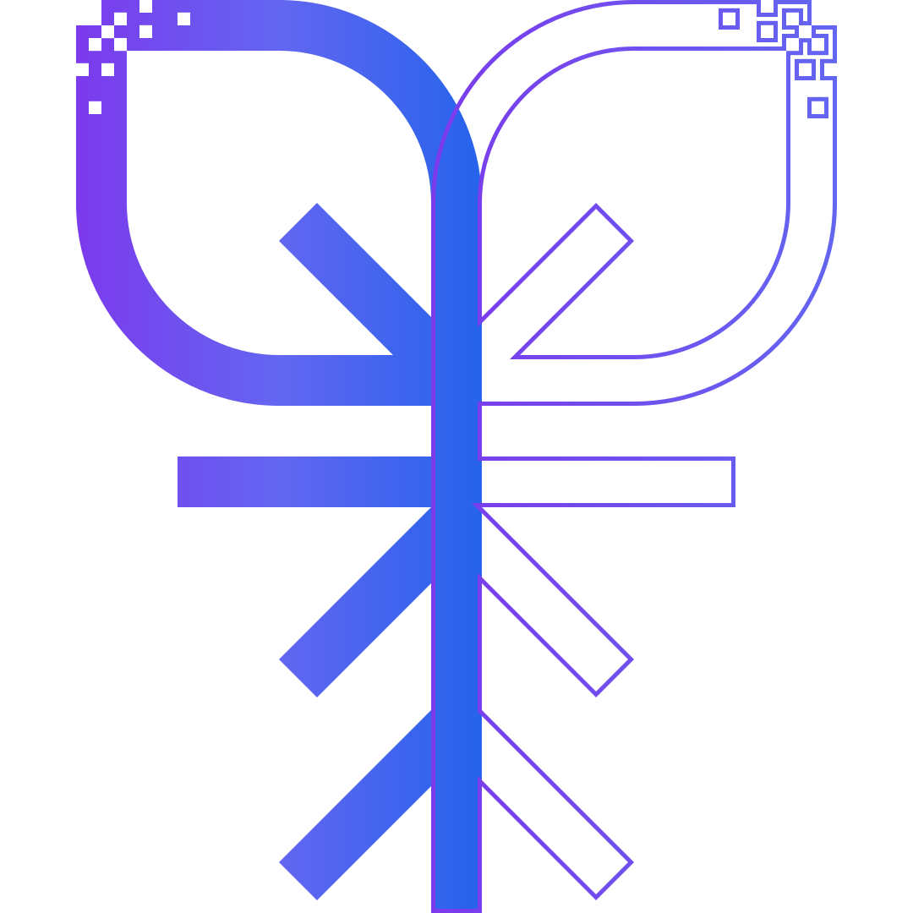

Sistema de crecimiento digital para negocios que quieren dejar de improvisar
Diseñamos estructuras de captación, conversión y medición que convierten el marketing en decisiones y crecimiento real.
Agendar diagnóstico estratégico →
No se trata de hacer más marketing.Se trata de tener un sistema claro para decidir, invertir y crecer
El problema no es hacer marketing.
Es no tener un sistema.
Muchos negocios invierten en publicidad, redes o páginas web sin saber qué funciona realmente.
Tienen datos, pero no decisiones. Acciones, pero no estructura.
El crecimiento termina dependiendo de la improvisación.
Diseñamos sistemas de crecimiento,
no acciones sueltas
Raíz Hub Digital funciona como una consultoría estratégica que conecta marketing, datos y decisiones para generar resultados sostenibles.
Cómo funciona el sistema de crecimiento digital

Claridad del negocio
Definimos objetivos reales y eliminamos lo innecesario.

Diseño del sistema
Estructuramos captación, conversión y flujo.

Medición accionable
Transformamos datos en decisiones.

Optimización continua
Ajustamos y escalamos con criterio.
Construye un sistema que haga crecer tu negocio
Antes de agendar una sesión, necesitamos entender tu contexto.
Iniciar diagnóstico →